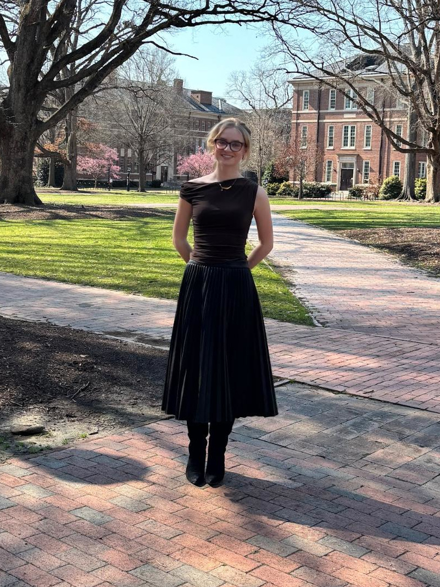
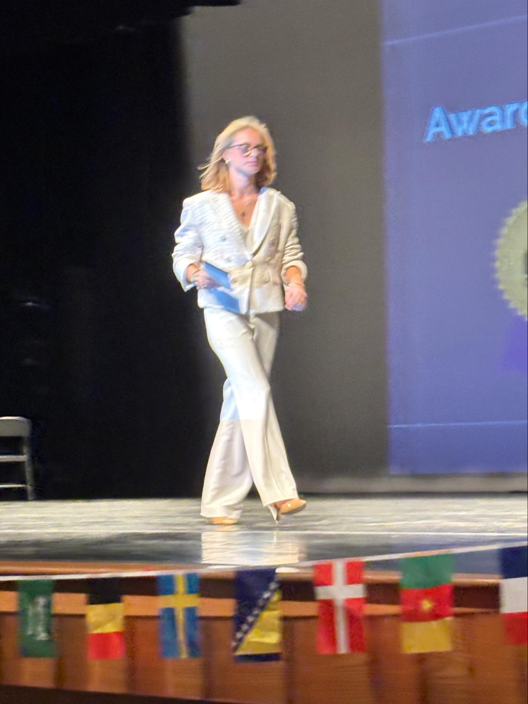
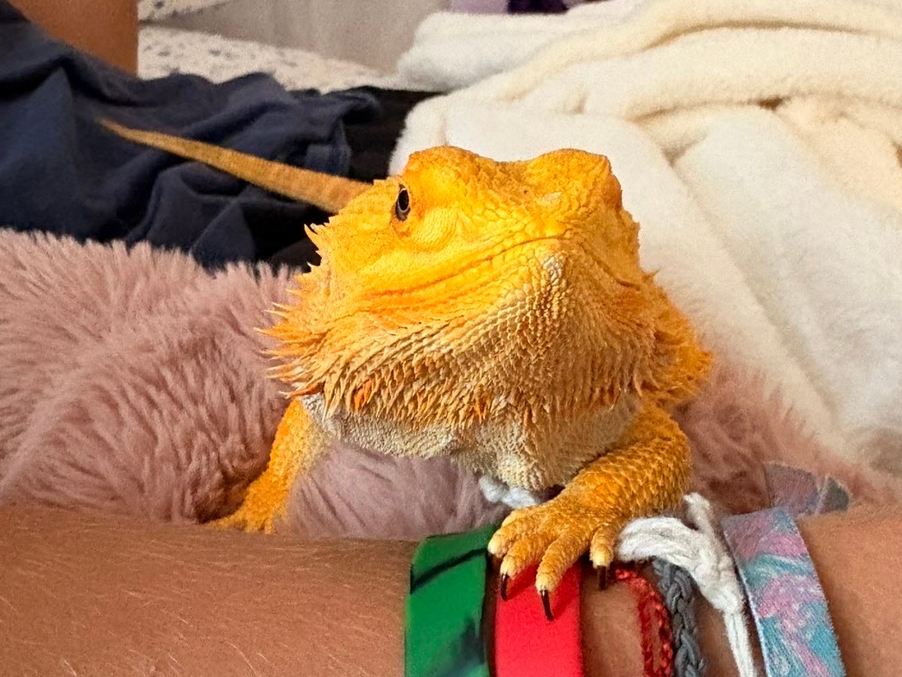

My name is
Alleta Garner
and I’m running for second vice president.
Let me tell you about myself.
Have any specific questions? Feel free to email me at aegarner@studens.wcpss.net!

Let me tell you about myself.
Have any specific questions? Feel free to email me at aegarner@studens.wcpss.net!
My name is Alleta Garner. I’m 16 years old and I attend Needham B. Broughton High School, as many of you know! I love to hangout with my friends and spend time with my family including my two dogs named Ivy and Parker. In my free time, I like to write stories, journal or make art.


I’m running to be second vice president for Broughton! You may be wondering that that role entails, and why you should vote for me. I’ll explain that all to you!
The second vice president of Broughton not only assists the president and first vice president in decision making and actions, but the role also includes being president of the Interclub Council. This means helping our clubs be active and running.
As a member of multiple clubs with multiple leadership positions in them, our clubs are incredibly important to me. If elected as second vice president, I will take on my role as president of the Interclub Council by not only continuing to help our clubs thrive, but also introducing the idea of an awards system for the most active clubs.
I also plan to propose an idea to teachers and admin for outdoor classes. Outdoor classes would mean you get to spend your class period working outside instead of in your classroom. This is an idea being proposed to teachers and admin. Teachers will decide if they want to follow this or not. Being outside is proven to reduce stress, anxiety and benefit mental health in general. If a teacher wants to take their class outside, they would be able to reserve a space using a form, which will then be shown on a shared calendar. Teachers will choose whether or not they would like to take their class outside. Most likely the teacher courtyard, bleachers (More so by the picnic tables) and the courtyard — if the teacher wants to. With the outdoor classes, there is an issue that arises. Lunch will interfere with the third and fourth period. Therefore, the only class periods that would work for the courtyard & bleachers area (More by the picnic tables out there.) would be the first, second and fourth period. The teacher courtyard would be fine for all periods!
For actually dealing with the issue of lunch, teachers would request to use a space with a form. In this form description, we can have the information above to tell them what is available and when/what space they can use to work around lunches.
Lastly, I’ll be pushing the idea to create an improved career center for Broughton. Ms. Blackwelder already has an amazing program set up to help students with their careers and plans for after college, specifically the CTE program. One thing I would like to promote is making it more accessible and known to students! (Rolling slides, posters, and forms where they can request help or information on something specific, without having to email.) Wake County libraries itself has guides for people looking for specific opportunities (Such as starting businesses, nonprofits, going to college, homework help, legal issues and topic research help.) This is something I would also like to make easily accessible and known to students!
You can find more info about my campaign ideas on my Instagram account!
On Friday, March 27th, we will have an advisory (Weird, right?) and that’s the day you vote for Secretary Treasurer, Second VP (Me!), First VP, and President! When it’s your turn to listen to the speeches (Depending on your grade level) you will go straight to the Auditorium to hear speeches (Depending on your grade level. If you’re a senior — You have a Caps Connection! No listening to speeches)
If voting goes into runoffs, you will vote on April 7th, when we get back from spring break!
Queso is the official mascot of the Alleta for 2nd VP campaign.
